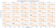

FLASH Spectral Line Data Validation ReportLast modified for FLASH: 10-Dec-2019 by Hyein Yoon |
|---|
Notes:
- This tool uses ASKAPsoft outputs. FITS-datacubes are needed only for getting bmaj and bmin (from the header).
- Total bandwidth: 288MHz (FLASH) vs 12MHz (WALLABY) - Should we split the long bandwidth into smaller units for validation check?
- Embedded HI absorption lines? How many aborption lines are expected? Are they siginificant?
- Checking with extracted spectral line domain? With well-known strong sources in the field?
- The tool does not make judgements (i.e. the data quality is good or bad). Do we aim to provide any metrics or quantify the data quality?
Observation
| SBID | No. of Antennas | Obs Start Date/Time | Obs End Date/Time | Duration (hr) |
Field | R.A. | Decl. | Total Bandwidth (MHz) |
|---|---|---|---|---|---|---|---|---|
| 10250 | 36 | 24-Oct-2019/19:13:41.6 | 25-Oct-2019/01:39:52.8 | 6.4 | FLASH_G9A_long | 08:47:35.5 | +00.30.00.0 | 288.0 |
- all columns: from ./metadata/mslist-*.txt
Processed Image Cube
- col 1: from ./slurmOutput/*.sh
- col 2: from ./diagnostics/cubestats-/cubeStats*linmos.contsub.txt (mosaic contsub)
- col 3-4: from ./metadata/mslist-Science*.txt
- col 5: from FITS data cube (NOW: continuum subtracted beam00 cube - Nov 22 ver; too big? robust parameter?)
- col 6: from ./SpectralCube_BeamLogs/beamlogs*.txt
- col 6: Bi-qing's notes: Evaluating each channel of each beam if ASKAPSoft fails to synthesize the beam, bmaj and bmin to 30 arcsec. bmaj and bmin for the first few channels are always zero.
- col 7: from ./flagSummary/*.flagSummary
- col 8: from ./flagSummary/*.flagSummary (flagging fraction) + theoretical rms estimation
Beams Statistics
| Beam Image Cube | Continuum Subtracted Beam Cube | Residual Beam Cube |
|---|---|---|
|
Min, Max, 1 percentile |
Min, Max, 1 percentile |
Min, Max, 1 percentile |
|
Stdev, MADFM |

Stdev, MADFM |
Stdev, MADFM |
| Continuum Beam Cube | |||
|---|---|---|---|
|
MAD Max Flux Density |

1-percentile noise rank |
||
*** all columns: cubePlot & cubeStats
*** why one percentile?
Mosaic Statistics
| Image Cube | Continuum Subtracted Cube | Residual Cube | Number of Bad Channel |
|---|---|---|---|
| 4672 |
*** all columns: mosaic
FIRST sources within 6x6 sq degree
- from FIRST database (2014Dec17; Helfand+ 2015)
*** a resolution of 5 arcsec
NVSS sources within 6x6 sq degree
*** from NVSS database (Condon+ 1998)
*** a resolution of 45 arcsec
* If more than one version of ASKAPsoft is used for the whole reduction, the latest one is reported.